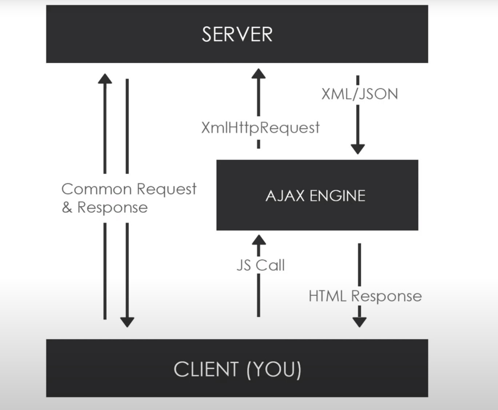
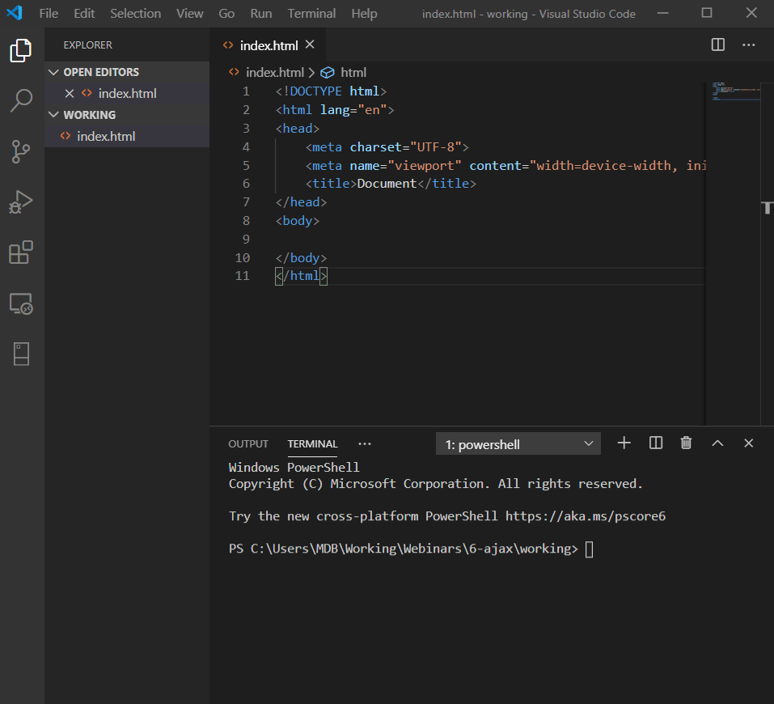
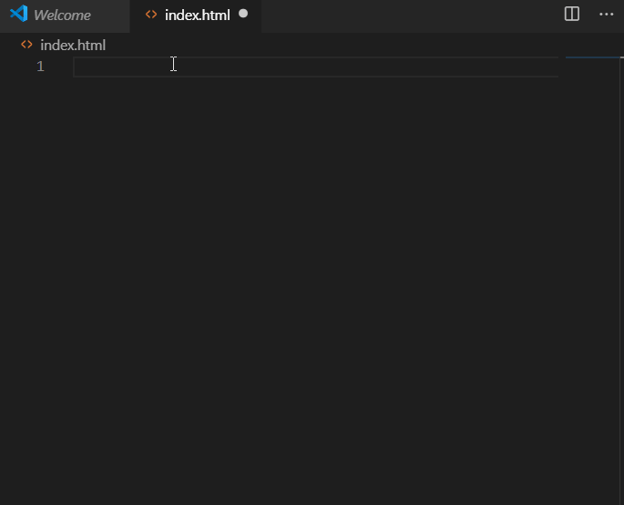
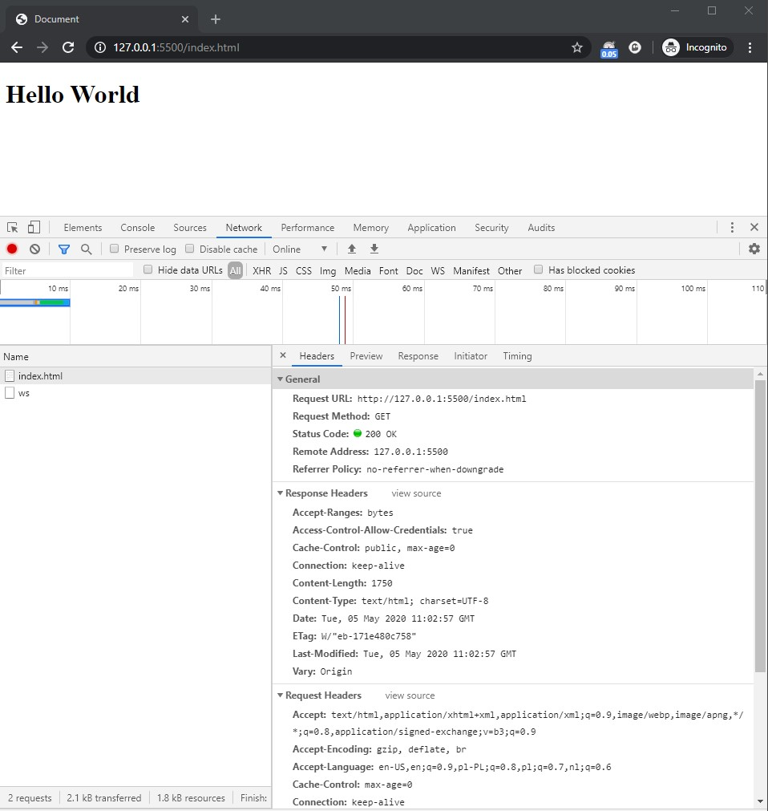
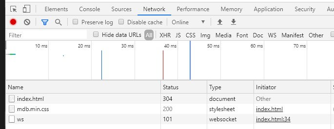
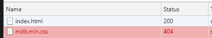

AJAX stands for Asynchronous JavaScript and XML. It's not a programming language, it's not a library so what it actually is?
AJAX, while not a technology itself is often described as a "new" approach to using a number of existing technologies together including:
AJAX allows us to:
Although AJAX has XML is in the name, when it comes to WebDevelopment it has almost entirely been replaced with JSON or plain text. Why?
XML was very important to the history of the modern web development. That's why AJAX name sticks (instead of AJAJ). That's also explain why we will be using XMLHttpRequest methods.
Both XML and JSON are designed to store data. However they have many differences:
XML is a very powerful markup language which allows to create complex data structures and has some distinctive fetaures like:
JSON (JavaScript Object Notation) is used to store information in an organized, and easy-to-access manner. Since it's tightly related to JavaScript (JSON is recognized natively by JavaScript) it become a standard for Web Development. It also has many features:
AJAX allows use to call our backend services using JavaScript (more precisely: XMLHttpRequest) without reloading page:
The easiest way to understand that this is to run example. We will see that very soon on real example.
Whenever we open any page, our we browsers is sending request to the server, and in the response receive a source code of our page which can be parsed and displayed to us by a web browser.
All of this happens thanks to HTTP (Hypertext Transfer Protocol) which is used to sends data between our browser and server.
There are few HTTP Methods available:
The most two common HTTP methods are GET and POST, and we will focus on them today.
We will need some server to run our examples. You can use more advanced ones like XAMP, but for the sake of this tutorial we will use a tiny Live Server available as an extension to Visual Studio Code.
To install it go to Extensions (Ctrl + Shift + X), search for Live server, and install it:
Now in order to start our server in one of 3 ways:
Note!Also the URL of our website has changed:
Let's create a new basic HTML file.
In order to do that you can use Emmet shortcut. Crate empty index.html file, type ! and press TAB key:
Now open our page using live server and check it inspector.
As you can see when we load a page, our browser is sending GET request. It received status 200 (we will learn more about status soon) and received a response.
Note: You can see more requests in the view - that might be caused by some browser extensions. In order to minimize impact you can open you page in a incognito mode.
When we add some stylesheets:
<link href="https://cdnjs.cloudflare.com/ajax/libs/mdbootstrap/4.16.0/css/mdb.min.css" rel="stylesheet">
And check console again, we will also notice that it was loaded using GET:
As you noticed it also got status 200. You may also noticed that our index.html changed status from 200 to 304 (Not modified). Why? This is because it was cached. When we visit page for the second time we do not have to load it all over again. Browser will check whether something has changed (got updated) and if not - it will serve cached version.
If we broke our css address:
<link href="https://mdbootstrap.com/mdb.min.css" rel="stylesheet">
We will get another, well known 404 error :)
Almost (but not entire!) traffic in web development goes through HTTP calls, therefore it is important for us to get a proper understanding of them. We will learn more advanced calls and status in a future, for now we have enough basics to continue.
Let's start writing some ajax calls